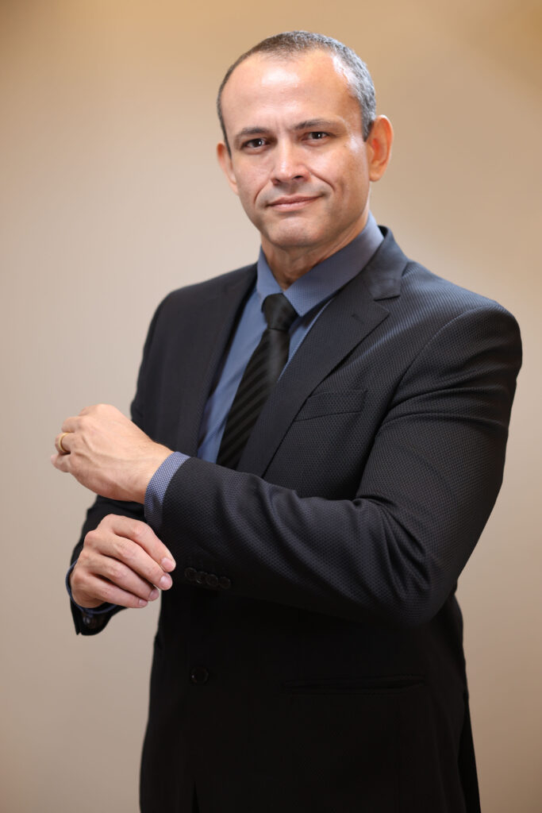

Avaliação individual
Histórico, exame físico direcionado, revisão de exames e objetivos reais antes de qualquer conduta.
Ortopedista em Brasília · Cirurgião do joelho
Dr. Rodrigo Pires, ortopedista e traumatologista com atuação em cirurgia do joelho e procedimentos minimamente invasivos para dor articular. Atendimento em cinco unidades em Brasília.

Hospital de Base do DF
Ortopedista no Pronto Socorro, com atuação em cirurgia do joelho, desde 2022.Ceilândia Esporte Clube
Departamento médico do time de futebol, desde 2025.SBCJ · 2023
Título de Especialista em Cirurgia do Joelho pela Sociedade Brasileira de Cirurgia de Joelho.Pós-graduação · 2025
Medicina Intervencionista da Dor e Ultrassonografia Musculoesquelética.Quando procurar
Dor que persiste, que limita esporte, trabalho ou sono, ou que não melhorou com o que já foi tentado. A consulta organiza sintomas, exames e histórico antes de decidir conduta.
Abordagem
O caminho não começa pelo procedimento. Ele começa por entender a dor, o contexto e o que faz sentido para o seu caso.
Histórico, exame físico direcionado, revisão de exames e objetivos reais antes de qualquer conduta.
Quando necessário, ultrassonografia musculoesquelética na própria consulta. Cada etapa é explicada.
Conservador primeiro. Procedimento intervencionista quando há indicação. Cirurgia do joelho quando o quadro pede — nunca o inverso.
Serviços
Cada indicação depende do diagnóstico e dos objetivos do tratamento. A lista abaixo mostra o que é possível, não o que será feito.
Avaliação de dor no joelho, ombro, quadril, coluna, tornozelo e demais queixas ortopédicas.
Imagem em tempo real, na própria consulta, para dor articular e de partes moles quando indicada.
Infiltrações articulares, bloqueios para dor e terapia por ondas de choque, guiadas por ultrassom quando indicado.
Aplicação de PRP e outros ortobiológicos para articulações e tendões, conforme avaliação clínica.
Avaliação para procedimentos cirúrgicos quando há indicação: lesões meniscais, ligamentares, artrose e outras.
Avaliação de lesões esportivas, sobrecargas de treino e retorno seguro às atividades.
Convênios
Confirmação de cobertura por unidade e plano é feita pelo WhatsApp antes do agendamento.
Locais de atendimento
Escolha a unidade mais conveniente. A confirmação de agenda, cobertura por convênio e horário é feita pelo WhatsApp antes da consulta.
Águas Claras
Unidade em Águas Claras — Brasília — DF.
Endereço completo a validarAsa Sul
Unidade da Clínica CEHD na Asa Sul — Brasília — DF.
Endereço completo a validarJardim Botânico
Unidade da Clínica CEHD no Jardim Botânico — Brasília — DF.
Endereço completo a validarInstituto de Neurocirurgia
Instituto de Neurocirurgia — Brasília — DF.
Endereço completo a validarTaguatinga Norte
Em frente ao Shopping JK — Taguatinga Norte — Brasília — DF.
Endereço completo a validarDúvidas frequentes
Respostas para o que costuma pesar na decisão de marcar a primeira consulta.
Quando a dor limita movimento, esporte, trabalho ou sono; quando há trauma, inchaço, perda de força ou instabilidade; ou quando a dor persiste apesar dos cuidados iniciais. A consulta separa o que resolve com orientação do que pede investigação.
Não. A conduta depende do diagnóstico, da limitação funcional e da resposta ao tratamento conservador. O caminho começa por orientação, reabilitação e, quando indicado, procedimento minimamente invasivo. Cirurgia entra quando o quadro pede — nunca como primeira resposta.
A ultrassonografia musculoesquelética permite ver a estrutura articular ou o tecido de partes moles em tempo real, guiando a agulha do procedimento — bloqueio, infiltração, coleta — pela imagem em vez de referência anatômica pura. É recurso útil quando a localização precisa da agulha faz diferença para o procedimento indicado.
Envolve o uso de PRP (plasma rico em plaquetas) e outros ortobiológicos aplicados em articulações e tendões para estimular processos naturais de reparo. A indicação depende do diagnóstico e das expectativas realistas do tratamento — não substitui cirurgia quando há indicação, mas pode adiar ou evitar em casos selecionados.
Sim. A cobertura varia por unidade e plano; a lista completa está na seção Convênios. A confirmação é feita pelo WhatsApp antes do agendamento — informe seu convênio e a unidade escolhida para receber o retorno.
O ortopedista geral atende toda a área ortopédica. O cirurgião do joelho é o ortopedista com formação adicional específica em joelho (área de atuação reconhecida pela SBCJ). Para queixas gerais, o ortopedista geral já cobre; para casos de joelho que podem precisar de decisão cirúrgica, a formação adicional pesa.
Sim. Radiografias, ressonâncias, tomografias, ultrassons e laudos anteriores ajudam a compor o quadro. Se algum exame estiver muito antigo ou faltar, a indicação de exame complementar é feita na própria consulta.
Agendar consulta
Uma mensagem para a equipe é suficiente para começar: confirmação de agenda, unidade e cobertura são feitas por lá antes da consulta.
Agendar avaliação pelo WhatsApp